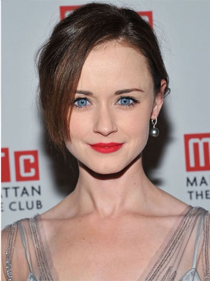
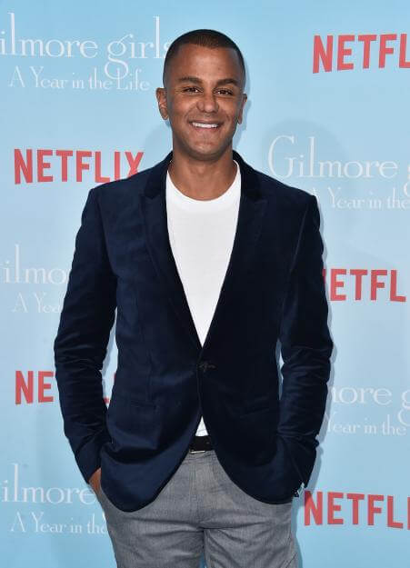
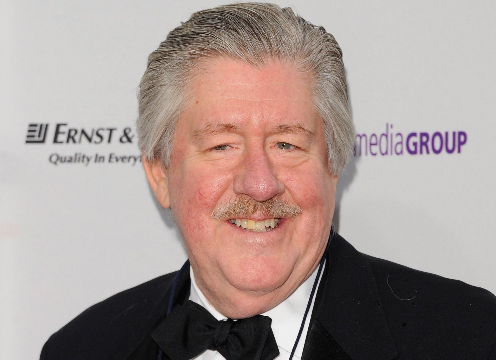

-
Lauren Graham as Lorelai Gilmore
Independent, 30-something single mom who runs a local inn with a deep love for pop culture and coffee.
-

Alexis Bledel as Rory Gilmore
Precocious and driven only-daughter of Lorelai, almost 16 at the start of the show.
-
Melissa McCarthy as Sookie St. James
Lorelai's chirpy best friend and chef/co-owner at the inn.
-
Keiko Agena as Lane Kim
Rory's best friend who lives a secret life, defying her strict, religious mother by becoming a rocker.
-

Yanic Truesdale as Michel Gerard
The grumpy French concierge at Lorelai and Sookie's inn.
-
Scott Patterson as Luke Danes
Grouchy but kind-hearted diner owner; Lorelai's friend and eventual love interest.
-
Kelly Bishop as Emily Gilmore
Matriarch of the Gilmore family, who lives as a high society housewife.
-

Edward Herrmann as Richard Gilmore
Intellectual patriarch of the Gilmore family, who works in insurance.
-
Liza Weil as Paris Geller
Rory's feisty nemesis and eventual friend throughout high school and college.
-
Jared Padalecki as Dean Forester
Rory's season 1–3 boyfriend, who moved to Stars Hollow from Chicago.
-
Milo Ventimiglia as Jess Mariano
Luke's troubled nephew who falls for Rory and becomes an intense but short-lived boyfriend.
-
Sean Gunn as Kirk Gleason
Quirky resident of Stars Hollow who works numerous jobs around the town.
-
Chris Eigeman as Jason Stiles
Lorelai's season 4 boyfriend and Richard's business partner.
-
Matt Czuchry as Logan Huntzberger
Rory's season 5–7 boyfriend, the heir of a New York Times-Esque publishing family resembling that of the Ochs-Sulzberger family.

 Lauren Graham as Lorelai GilmoreIndependent, 30-something single mom who runs a local inn with a deep love for pop culture and coffee.
Lauren Graham as Lorelai GilmoreIndependent, 30-something single mom who runs a local inn with a deep love for pop culture and coffee. Melissa McCarthy as Sookie St. JamesLorelai's chirpy best friend and chef/co-owner at the inn.
Melissa McCarthy as Sookie St. JamesLorelai's chirpy best friend and chef/co-owner at the inn. Keiko Agena as Lane KimRory's best friend who lives a secret life, defying her strict, religious mother by becoming a rocker.
Keiko Agena as Lane KimRory's best friend who lives a secret life, defying her strict, religious mother by becoming a rocker. Scott Patterson as Luke DanesGrouchy but kind-hearted diner owner; Lorelai's friend and eventual love interest.
Scott Patterson as Luke DanesGrouchy but kind-hearted diner owner; Lorelai's friend and eventual love interest. Kelly Bishop as Emily GilmoreMatriarch of the Gilmore family, who lives as a high society housewife.
Kelly Bishop as Emily GilmoreMatriarch of the Gilmore family, who lives as a high society housewife. Liza Weil as Paris GellerRory's feisty nemesis and eventual friend throughout high school and college.
Liza Weil as Paris GellerRory's feisty nemesis and eventual friend throughout high school and college. Jared Padalecki as Dean ForesterRory's season 1–3 boyfriend, who moved to Stars Hollow from Chicago.
Jared Padalecki as Dean ForesterRory's season 1–3 boyfriend, who moved to Stars Hollow from Chicago. Chris Eigeman as Jason StilesLorelai's season 4 boyfriend and Richard's business partner.
Chris Eigeman as Jason StilesLorelai's season 4 boyfriend and Richard's business partner. Matt Czuchry as Logan HuntzbergerRory's season 5–7 boyfriend, the heir of a New York Times-Esque publishing family resembling that of the Ochs-Sulzberger family.
Matt Czuchry as Logan HuntzbergerRory's season 5–7 boyfriend, the heir of a New York Times-Esque publishing family resembling that of the Ochs-Sulzberger family.